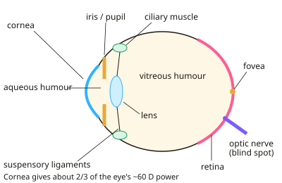

A-level Physics Year 13 · Topic 16
Medical physics: vision, hearing and measurement
Medical physics of vision, hearing and measurement applies physics to the human body.
We will see how the eye focuses light, how lenses correct vision defects, and how rods and cones let us see in detail and colour.
Then we study how the ear works, the decibel scale and hearing loss, and how an ECG measures the tiny signals from the heart.
- 6 subtopics
- 247 questions
- Free: 16.1 notes and 10 questions
In this topic
- 16.1Structure of the eye, image formation and accommodationFree below · 34 questions
- 16.2Defects of vision and corrective lenses (lens power)Open in Full Marks · 54 questions
- 16.3Visual perception: rods, cones, resolution, colour vision and dark adaptationOpen in Full Marks · 29 questions
- 16.4The ear: structure, function and frequency responseOpen in Full Marks · 45 questions
- 16.5Sound intensity level, the decibel scale and hearing defectsOpen in Full Marks · 60 questions
- 16.6Biological measurement: ECG, electrodes, differential amplifiers and noiseOpen in Full Marks · 25 questions
16.1 · Free notes
Structure of the eye, image formation and accommodation

Key points
- The cornea is the main refracting surface. The largest change in refractive index occurs at the air–cornea boundary, which gives about two-thirds of the eye's total power (≈ 60 D). The crystalline lens only fine-tunes the focus.
- Light passes through the cornea, aqueous humour, pupil, lens and vitreous humour to the retina. The iris changes the pupil diameter to control how much light enters the eye.
- The retina contains the photoreceptors (rods and cones). The fovea is the region of sharpest vision. The blind spot is where the optic nerve leaves the eye, and it has no receptors.
- The image on the retina is real, inverted and diminished, and the brain interprets it as upright. The lens-to-retina distance is fixed (≈ 2 cm), so the focal length of the lens must change to focus objects at different distances.
- Accommodation is the ability of the eye to change the focal length (power) of the lens so that objects at different distances are focused on the retina.
- Near object: the ciliary muscles contract, the suspensory ligaments slacken and the lens becomes thicker, so its focal length is shorter and its power greater. Distant object: the ciliary muscles relax, the ligaments are taut and the lens is thinner.
- The far point of a normal eye is infinity (relaxed eye). The near point is the closest distance at which the eye can form a clear image, about 25 cm. It recedes with age.
- Lens power P = 1/f, measured in dioptres (D), where 1 D = 1 m⁻¹. For thin lenses in contact, P = P₁ + P₂. The cornea is ≈ 43 D and the lens ≈ 15–20 D (variable).
- Use 1/u + 1/v = 1/f with v fixed. For v = 2.0 cm and an object at infinity, P = 50 D. For an object at 25 cm, P = 4 + 50 = 54 D, so accommodation provides about 4 D.
- Under water the cornea–water refractive index difference is small, so most of the cornea's power is lost and vision is blurred. Goggles restore an air–cornea interface.
- Exam tip: describe accommodation in order (ciliary muscle, ligaments, lens shape, focal length) and always say that light is focused on the retina.
In more detail
- Worked lens power: with the retina 2.0 cm behind the lens, a distant object needs P = 1 ÷ 0.020 = 50 D; an object at 25 cm needs P = 1 ÷ 0.25 + 1 ÷ 0.020 = 54 D, so accommodation adds 4 D.
- Who does the focusing: the cornea provides about 40 D and the lens about 15–20 D, so the cornea does roughly two-thirds of the work.
- Refractive indices: air 1.00 → cornea 1.38 → aqueous humour 1.34 → lens about 1.40 → vitreous humour 1.34; the biggest change is at the air–cornea surface.
- Under water: water (n = 1.33) is close to the cornea (1.38), so the cornea loses most of its power and vision blurs; goggles keep air in front of the eye.
Practice
Structure of the eye, image formation and accommodation: 10 questions
Pick an answer to check it, or open the answer for the explanation.
1. Which part of the human eye provides most of the refraction of light entering it?
- Vitreous humour
- Cornea
- Crystalline lens
- Iris
Show answer
B: Cornea. The cornea: the biggest refractive index change occurs at the air–cornea boundary. It gives about two-thirds of the eye's ≈ 60 D. The lens only fine-tunes the focus.
2. When a person shifts their gaze from a distant tree to a book held close, what happens in the eye?
- Ciliary muscles relax and the lens becomes thinner
- Iris contracts and the retina moves towards the lens
- Ciliary muscles contract, ligaments slacken, lens thickens
- Ciliary muscles contract and the lens is pulled flatter
Show answer
C: Ciliary muscles contract, ligaments slacken, lens thickens. Contracting ciliary muscles slacken the suspensory ligaments, so the lens springs to a thicker, more curved shape. Its focal length shortens and its power rises.
3. Take the lens-to-retina distance as 2.0 cm. What total power must the eye have to focus light from a very distant object on the retina?
- 2.0 D
- 20 D
- 0.020 D
- 50 D
Show answer
D: 50 D. For an object at infinity, 1/f = 1/v = 1/0.020 m = 50 D.
4. With a lens-to-retina distance of 2.0 cm, what total power focuses an object 25 cm from the eye onto the retina?
- 54 D
- 50 D
- 46 D
- 4.0 D
Show answer
A: 54 D. P = 1/u + 1/v = 1/0.25 + 1/0.020 = 4.0 + 50 = 54 D.
5. An older person has a far point at infinity and a near point of 50 cm. What is the maximum increase in power their eye can produce?
- 50 D
- 0.5 D
- 2.0 D
- 4.0 D
Show answer
C: 2.0 D. Moving from infinity to 0.50 m needs an extra 1/0.50 = 2.0 D. A young eye with a 25 cm near point manages 4.0 D, so accommodation has halved.
6. What is the main function of the iris?
- To focus light onto the retina
- To convert light into electrical impulses
- To control how much light enters by changing the pupil diameter
- To hold the lens in position
Show answer
C: To control how much light enters by changing the pupil diameter. The iris muscles change the pupil size and so regulate the light intensity reaching the retina. Focusing is done by the cornea and lens.
7. Which statement describes the image formed on the retina of a normal eye?
- Virtual, upright and diminished
- Real, upright and magnified
- Real, inverted and diminished
- Virtual, inverted and magnified
Show answer
C: Real, inverted and diminished. The retina receives a real image that is inverted and smaller than the object. The brain interprets it as upright.
8. A swimmer opens their eyes under water without goggles and sees a blurred image. What is the best explanation?
- The cornea has little refracting power against water
- The pupil closes completely under water
- Water absorbs most light before the retina
- The lens cannot accommodate in water
Show answer
A: The cornea has little refracting power against water. The cornea's refractive index is close to that of water, so there is little refraction at that surface. Most of the eye's focusing power is lost, so the image is not formed on the retina.
9. The eye changes from viewing a near object to viewing a distant one. What happens to the focal length of the lens?
- It stays the same because the retina moves
- It decreases as the lens thickens
- It increases as the lens becomes thinner
- It increases as the lens becomes thicker
Show answer
C: It increases as the lens becomes thinner. Ciliary muscles relax, the ligaments pull the lens thinner, so its focal length increases and its power falls, which suits distant objects.
10. Which statement about the blind spot is correct?
- It contains only rods
- It is where the optic nerve leaves the retina and there are no receptors
- It is the fovea, where cones are most dense
- It is the thinnest part of the lens
Show answer
B: It is where the optic nerve leaves the retina and there are no receptors. The blind spot is where nerve fibres leave the eye. It has no rods or cones, so light falling there gives no signal.
Keep going in Full Marks
Full Marks has 34 questions on Structure of the eye, image formation and accommodation (24 more than here), set out in practice levels. You also get notes and 3D models for all 6 subtopics of Medical physics: vision, hearing and measurement, plus games, timed exams and past papers.
On your exam board
Not in the OCR A, OCR B, Edexcel and Cambridge specifications.